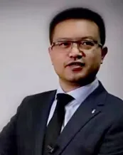
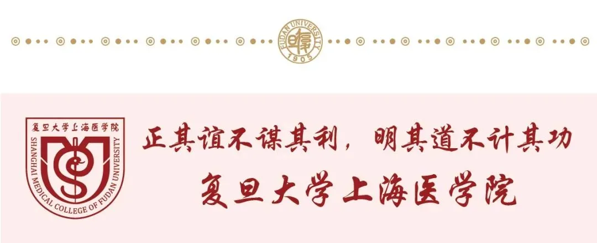

复旦大学王正昕教授诚聘优秀博士后
原文：https://mp.weixin.qq.com/s?__biz=MzAwMzIzOTk5OQ==&mid=2247509250&idx=1&sn=2253ddb7188863f25ba134747ce554e4&chksm=9b3cdc52ac4b55441f5ec99d349d1527fb2e4dc8f4067e940a58a4082350eb54e8d4b4ce1a32#rd 合集：求职/求学/招聘
招聘岗位：博士后
课题组介绍

王正昕，复旦大学附属华山医院教授，博导，主任医师，国家重点研发计划首席科学家，华山医院肝脏移植中心主任/复旦大学器官移植研究所常务副所长。个人累计完成2800余例肝移植。连续多年带领中心肝移植例数和质量位居全国前列，2023年成人肝移植完成例数全国第一。任中国康复医学会器官移植康复专业委员会主任委员，上海市医学会器官移植专业委员会副主任委员，中华医学会器官移植分会委员，中国医师协会器官移植分会常务委员，中国医疗保健国际交流促进会肝脏移植分会副主任委员，中华医学会外科分会器官移植学组委员，中国医院协会器官获取与分配管理工作委员会常务委员，海峡两岸医药卫生交流协会器官移植分会常务委员。获“中国好医生”、“白求恩式好医生”提名奖、名医百强榜普外科肝移植TOP 10。现主持1项十四五国家重点研发计划、1项国自然器官移植专项项目、1 项国自然面上项目。完成3 项国自然面上项目、2 项十三五重大专项子课题、1项上海市申康疑难疾病精准诊治攻关项目等课题。在基于人工智能、大数据构建肝移植精准诊疗体系、肝癌肝移植复发转移防治新策略研究、脂肪变性供肝保护策略研究等移植免疫领域均有深厚的研究基础。牵头主编、发布器官移植诊疗指南1项、专家共识2项。近年发表高水平论文40余篇，授权转件著作权7项、专利5项。获军队医疗成果二等奖一项（第 1），上海市医学会科技进步二等奖 2 项（分别第 1、第 3）。
合作导师 ：田莉, 同济大学附属上海市第四人民医院科研部部长，上海市麻醉与脑功能调控重点实验室副主任，同济大学青百A岗特聘教授，博士生导师，麻醉与围术期医学科副主任医师。担任上海医学会麻醉学分会青年委员会副主任委员、上海市神经科学学会麻醉与脑科学分会秘书长、上海市医学伦理学会理事、上海市医院协会临床研究管理专业委员会委员等任职。获国家优青、教育部优秀青年团队培育建设项目负责人、上海市曙光学者、上海市青年科技启明星、上海市人才发展基金、教育部高校青年骨干教师、中华麻醉学分会中青年优秀麻醉人才、同医最美科技工作者等。作为负责人主持国家自然科学基金、科技部重点研发课题等省部级以上项目10项，研究成果已在包括 InfoMat, BJA等学术期刊发表SCI论文36篇。授权国内专利4项，参编参译各类学术专著4部。
拟研究课题
1. 通过建立移植后肿瘤发生和复发转移的多组学图谱，挖掘免疫抑制状态下肿瘤新发和复发转移的特征性调控信号网络及免疫图景、干预靶点。本团队合作伙伴主要有中国科学院分子细胞科学卓越创新中心王广川教授，中国人民解放军海军军医大学免疫与炎症全国重点实验室侯晋教授、刘艳芳教授等。
2. 通过数字病理、影像组学、肠道菌群检测，基于人工智能分析平台，构建器官移植后肿瘤发生、复发转移的预警、早诊、分子分型辅助诊断等精准诊疗评估体系。
3. 通过人工智能、医学大数据平台构建围术期麻醉患者认知功能损伤精准预警、预后评价、早期诊断等辅助诊疗模型。
应聘条件
1. 获得（或即将获得）生物医学、生物信息、统计学、流行病学、人工智能等相关博士学位，年龄不超过35周岁。
2. 具有良好的英文文献阅读、写作及口头交流能力。
3. 为人勤奋踏实，责任心强，热爱科研，具有独立工作和团队协作能力。
福利待遇
1. 提供专业的科研指导。
2. 按照复旦大学博士后管理规定，提供有竞争力的薪酬待遇，支持优秀者申报复旦大学超级博士后、上海市超级博士后及国家博新计划、B/C档等人才计划。
博士后基础年薪30万（税前），优先推荐申请复旦大学超级博士后（年薪30万起）、上海市超级博士后（年薪35万起）、国家博新计划（年薪50万起）。复旦大学上海医学院博士后质量提升计划 将为优秀博士后提供进一步支持。
附属医院将根据文章发表和考核情况，给予科研奖励。博士后在站可以负责人身份申请国家自然科学基金等科研课题，根据课题获批情况可获得相应的科研专项奖励，最高20万元/项。
3. 课题组提供全方位的科研支持，提供国内外各种会议、访问交流机会，支持并协助申请上海市及国家各类科研和人才项目。
4. 户口迁入、住房和子女入学等按照复旦大学相关规定执行。
应聘材料及联系方式
1. 应聘函(Cover letter)：包括研究或工作兴趣、职业理想及规划、拟入职时间等。
2. 个人简历(CV)：包括近期照片、联系电话、教育及科研工作经历、理论或技术专长、发表文章情况等。
3. 学历及学位证书、代表性学术论文。
4. 应聘推荐人(References)联系方式(2位)。
应聘者发送应聘材料至wangzhengxin@huashan.org.cn ，并抄送ltian@tongji.edu.cn ,邮件标题请注明“应聘王正昕课题组博士后 +姓名”符合要求者，将于近期安排面试。此招聘信息长期有效。

REMEMBER 点击关注我们 获取更多招聘信息